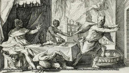
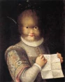

Dans la peau du loup
Infâme créature tristement connue à travers le monde pour avoir martyrisé de nombreux peuples... Le loup-garou est un animal mythologique d’origine européenne qui existe depuis des siècles mais attire l’attention principalement au 16e siècle. Il est très utilisés dans la Littérature et ainsi que dans le cinéma, grâce à leur popularité.
Racine
lykánthrôpos (lúkos / loup et ánthrôpos / homme)
Pourquoi un loup ? et non pas un autre animal ?
L’explication remonte à la mythologie grecque. Il existait un roi nommé Lycaon qui aurait donné à Zeus de la chair humaine qui lui-même appréciait beaucoup. Zeus furieux en apprenant la vérité, transforma lui et ses fils en loups. C’est de la que vient le vice et le désir pour la chair humaine des loups-garous.
Zeus chasse Lycaon
Anéantir la bête
Des milliers de personnes ont été soupçonnés d’être des loup-garou au cours du temps, la plupart étaient exécutées ou brûlées. Dans certains pays, il était possible de soigner le malade, et les seuls moyens pouvant les soigner étaient : soit les potions préparées à bases d’aconit plus connu sous le nom d’Aconit Tue-Loup, plante très toxique qui agissait comme un anesthésique qui pouvait également ralentir le pouls et le rythme cardiaque. Soit l’alternative qui consistait à exorciser le sujet qui invoquait de nombreuses prières et interventions chirurgicales pour libérer la bête.
Aconit Tue-Loup
La science renverse le mythe
Avec le progrès scientifique, de nombreuses recherches ont été faites et les scientifiques ont réussi à expliquer pourquoi le mythe du loup-garou a fait beaucoup parler de lui. Voici quelques maladies, qui étaient supposément mal interprétés :
-Hypertrichose, une maladie génétique qui se manifeste par une apparition et croissance de poils partout sur le corps.
Enfant atteint de hypertrichose
-La porphyrie est aussi une maladie génétique qui se manifeste par une croissance de poils qui génère la défiguration des dents et doigts, et entraînant le sujet à la folie, lorsqu’il est exposé à la lumière. Ce qui est similaire à la transformation en loup-garou lors d’une nuit de pleine lune.
-Les loups étant l’un des principaux porteurs de rage, cette maladie entraîne un comportement animal et une excitation anormale. D’où la morsure d’un loup/loup-garou était considérée comme l’une des causes à la transmission de la lycanthropie.
Après de nombreuses recherches, les scientifiques affirment que la lycanthropie ne serait pas une maladie qui manifeste chez l’homme par une transformation physiologique, mais plutôt une maladie psychologique.
Conclusion
Depuis la nuit des temps la lycanthropie fait terreur à travers le monde, mais rien ne peut prouver leur existence ni leur inexistence. On ne devient pas loup- garou, c’est quelque chose qui sommeille très profondément en nous.